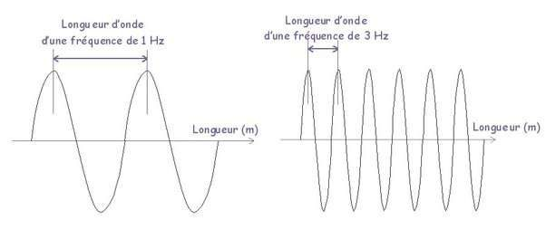
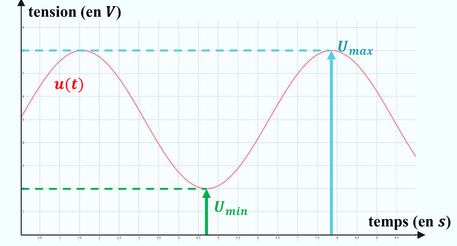
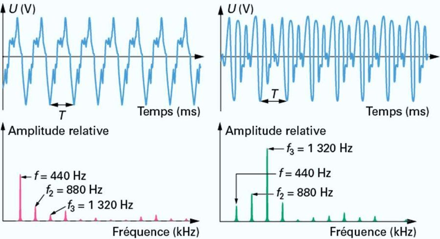
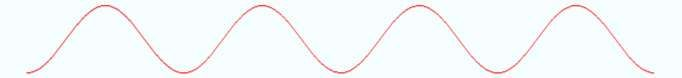
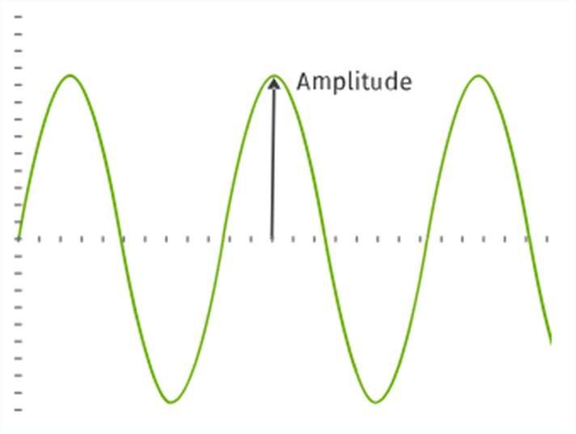
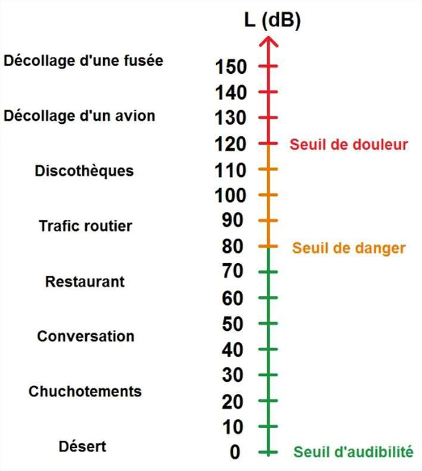

Émission et perception d'un son
Ce chapitre sera débloqué en fin de séquence, au rythme de la classe. Le code de déblocage est transmis via le cahier de textes — il figure aussi en bas de ta fiche de cours.
Sommaire du chapitre
Physique-Chimie · 2nde · Thème 3 — Ondes et signaux
Émission et perception d'un son
Thème 3 · Chapitre 1 — cours & exercices corrigés
01 Caractéristiques d'un signal périodique
Un phénomène périodique est un phénomène qui se reproduit identique à lui-même à intervalles de temps égaux.
Un phénomène périodique est un phénomène qui se reproduit identique à lui-même à intervalles de temps égaux.
Tous les signaux ne sont pas périodiques : un sismogramme enregistre des oscillations irrégulières, alors qu'un électrocardiogramme reproduit le même motif à intervalles réguliers.


A · Période
La période T d'un signal périodique est la plus petite durée au bout de laquelle le signal se reproduit identique à lui-même. C'est la durée d'un motif élémentaire.
- Repérer un motif élémentaire qui se répète.
- En compter n consécutifs, le plus possible.
- Lire les instants ti (départ) et tf (arrivée).
- En déduire : T = tf − tin
Pourquoi plusieurs motifs ? La lecture des instants sur le graphe est imprécise. En mesurant sur n motifs, on divise cette imprécision par n.
On observe à l'oscilloscope le signal électrique délivré par un microphone placé devant une source sonore. Le signal obtenu est périodique : on y reconnaît un motif qui se répète à intervalles réguliers.
Calculer la période T de ce signal.

Voir la correction
On mesure le temps de plusieurs motifs pour limiter l'erreur de mesure. Sur le graphe, 3 motifs s'étendent de ti = 0,0003 s à tf = 0,0082 s.
3T = tf − ti = 0,0082 − 0,0003 = 7,9 × 10−3 s
T = 7,9 × 10−33 ≈ 2,6 × 10−3 s = 2,6 ms

B · Fréquence
La fréquence f correspond au nombre de motifs élémentaires (périodes) par unité de temps, le plus souvent par seconde. Son unité est le hertz de symbole Hz.
T période · s
Calculer la fréquence du signal de l'exercice précédent.
Rappel de l'exercice 1 : T ≈ 2,6 × 10−3 s = 2,6 ms

Voir la correction
f = 1T
On repart de la valeur non arrondie de la période : T = 7,9 × 10−33 = 2,633 × 10−3 s.
f = 12,633 × 10−3 ≈ 3,8 × 102 Hz = 380 Hz

Cette différence d'allure, l'oreille l'entend directement : plus la fréquence est élevée, plus le son perçu est aigu ; plus elle est basse, plus il est grave. On reviendra sur cette notion — la hauteur du son — dans la partie 4.
C · Extrema
Un signal périodique possède des extrema (ou extremums) : une valeur maximale et une valeur minimale. Pour une tension périodique u(t) on parle de tension maximale Umax et de tension minimale Umin.

L'écart entre ces extrema donne l'amplitude du signal. On verra en partie 4 qu'elle est liée à ce que l'oreille perçoit comme l'intensité du son — le fait qu'il soit fort ou faible.
La hauteur d'un son (grave ou aigu) est liée à sa fréquence. Son intensité (fort ou faible) est liée à son amplitude. Ce sont deux caractéristiques indépendantes : un son grave peut être très fort, et un son aigu très faible.
Déterminer les valeurs de la période T, de la fréquence f et des tensions maximale Umax et minimale Umin du signal ci-dessous.

Voir la correction
Le graphe donne 4 motifs sur 4T = 93 ms = 9,3 × 10−2 s.
T = 9,3 × 10−24 = 2,325 × 10−2 s ≈ 2,3 × 10−2 s = 23 ms
f = 12,325 × 10−2 ≈ 43 Hz
Umax = 4 V · Umin = 0 V

02 Les ondes
Une onde est la propagation d'une perturbation sans déplacement de matière.

Il existe plusieurs types d'ondes :
- Les ondes mécaniques qui se propagent dans un milieu matériel, sans transport de matière mais avec transport d'énergie.
- Les ondes électromagnétiques (OEM) qui peuvent se déplacer dans le vide. Elles transportent de l'énergie mais aussi de l'information.
Indiquer, pour chaque cas, s'il s'agit d'une onde mécanique ou d'une onde électromagnétique (OEM).


Voir la correction
- Lumière du Soleil → OEM
- Ondes radio → OEM
- Onde sonore → mécanique
- Vague → mécanique
- Ondes sismiques → mécanique
03 Émission et propagation d'un signal sonore
A · Émission du signal sonore
Un émetteur (ou source sonore) est un objet qui produit un signal sonore grâce à une de ses parties qui vibre. Une vibration est un mouvement de va-et-vient d'un objet.
Remarque : pour que le signal sonore émis soit plus audible, il doit être amplifié par une caisse de résonance.


B · Propagation du signal sonore
Une onde sonore se propage dans un milieu matériel (solide, liquide ou gazeux) mais ne peut pas se propager dans le vide.

Que devient le son de la sonnerie à mesure que l'air est retiré de la cloche ? Qu'en déduit-on sur la propagation du son ?
C · Vitesse du signal sonore
La vitesse de propagation du signal sonore cson, appelée célérité, dépend du milieu traversé : elle est plus élevée dans les liquides ou les métaux que dans l'air.
En effet, dans les matériaux les plus denses comme les métaux, les molécules sont très proches les unes des autres et se transmettent très rapidement l'information ; tandis que dans les gaz, les molécules sont plus dispersées et l'onde sonore se propage plus lentement.
Il faut connaître la vitesse du son dans l'air : cson(air) = 340 m·s−1.
| Milieu | Vitesse du son |
|---|---|
| Air | 340 m·s⁻¹ |
| Eau | 1450 m·s⁻¹ |
| Glace | 3200 m·s⁻¹ |
| Verre | 5300 m·s⁻¹ |
| Acier | 5750 m·s⁻¹ |
d distance parcourue · m
Δt durée du parcours · s
Le son d'un éclair met 9 secondes à parvenir à nos oreilles. À quelle distance se trouve l'orage ?
Voir la correction
cson = dΔt
d = cson × Δt
d = 340 × 9 = 3060 m = 3,06 km
Le chant d'une baleine bleue a pu être entendu à 1000 km du cétacé (propagation dans l'eau). Combien de temps faut-il à ce chant pour parcourir cette distance ?
Données : cson(eau) = 1450 m·s⁻¹
Voir la correction
cson = dΔt
Δt = dcson
Δt = 1000 × 10001450 ≈ 690 s
Soit environ 11 min 30 s pour parcourir les 1 000 km.
04 Perception des sons
A · Fréquences audibles, ultrasons et infrasons
L'oreille humaine est un récepteur sensible à des ondes sonores dont la fréquence est comprise entre environ 20 Hz et 20 kHz. Ce domaine, celui des sons audibles, est situé entre celui des infrasons (en dessous) et celui des ultrasons (au-dessus).
Ces valeurs peuvent varier d'un individu à l'autre et le domaine des fréquences audibles se réduit avec l'âge, surtout dans les aigus.
Le domaine audible se subdivise lui-même en trois zones — les graves, les mediums et les aigus —, encadrées par les infrasons et les ultrasons :
| Domaine | Fréquences |
|---|---|
| Infrasons | en dessous de 20 Hz |
| Sons graves | 20 Hz — 200 Hz |
| Sons mediums | 200 Hz — 2 000 Hz |
| Sons aigus | 2 000 Hz — 20 000 Hz |
| Ultrasons | au-dessus de 20 000 Hz |


B · Hauteur et timbre d'un son
Un son perçu est associé à des caractéristiques physiologiques :
- la hauteur, qui correspond à sa fréquence, dite fréquence fondamentale ;
- le timbre, qui correspond à la présence d'autres fréquences, dites fréquences harmoniques — on parle alors de son complexe.
Une même note, jouée par des instruments différents, aura la même hauteur mais un timbre différent, ce qui permet de reconnaître l'instrument.



Le son émis par un diapason est un son pur (ou son simple) : il ne possède pas de fréquences harmoniques, il est sinusoïdal.
C · Niveau d'intensité sonore
Un son est d'autant plus intense que la source sonore vibre avec une grande amplitude. Pourtant, un son deux fois plus intense n'est pas perçu deux fois plus fort par l'oreille : l'oreille ne réagit donc pas proportionnellement à l'intensité I de l'onde sonore.
Pour modéliser cette réalité, on définit le niveau d'intensité sonore L, exprimé en décibel (dB), qui n'est pas proportionnel à l'amplitude. Le niveau 0 dB est le niveau en dessous duquel une oreille moyenne ne détectera pas le son.
On a vu en partie 1 que l'écart entre les extrema d'un signal en donne l'amplitude : c'est cette grandeur, déjà rencontrée, qui commande l'intensité du son.

Rappel de la partie 1 — la hauteur d'un son (grave ou aigu) dépend de sa fréquence, jamais de son amplitude. Les deux notions restent indépendantes.
L'onde sonore peut représenter un danger pour l'oreille si son niveau d'intensité sonore est trop élevé. On définit une échelle de niveau sonore : au-delà d'un certain niveau (seuil de danger vers 80 dB, seuil de douleur vers 120 dB), la vibration peut endommager l'oreille irrémédiablement. Dans un environnement bruyant, il est conseillé de porter des protections (casque anti-bruit, bouchons).
Le seuil de danger, vers 80 dB, est celui du trafic routier, d'une tondeuse ou d'une salle de sport bruyante. C'est un seuil d'exposition prolongée : le dommage vient de la durée autant que du niveau, et il s'installe sans qu'on s'en rende compte.
Le seuil de douleur, vers 120 dB, est celui d'un concert au pied des enceintes, d'une sirène toute proche ou d'un décollage d'avion. Là, le dommage peut être immédiat et irréversible : une seule exposition suffit.



✓ Pour le DS, je sais :
M. Van HoordeLycée général Isaac de l'Étoile · Poitiers